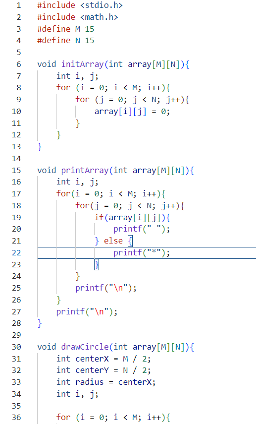
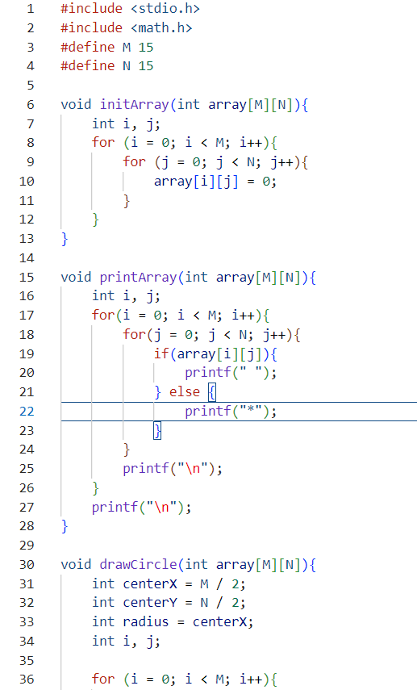

C言語を用いてコンソール上に簡単な「円」を描画するプログラムの一部
作成時期
一年前期or後期
プログラムの内容
15×15の2次元配列を用いて、全体を「*」で埋めた状態から、中心を基準に半径をもって円内部の値を「1」に変更し、その状態を表示するという仕組み。

C言語を用いてコンソール上に簡単な「円」を描画するプログラムの一部
一年前期or後期
15×15の2次元配列を用いて、全体を「*」で埋めた状態から、中心を基準に半径をもって円内部の値を「1」に変更し、その状態を表示するという仕組み。